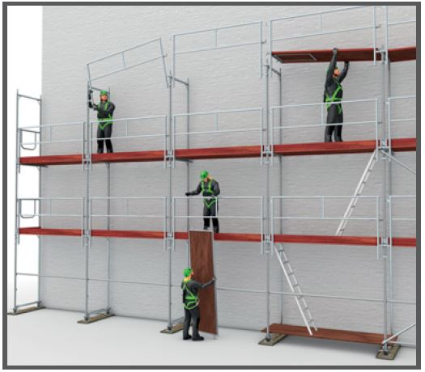
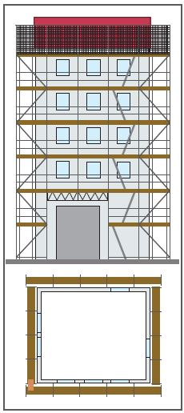

Gerüstbauarbeiten Plan für Auf-, Um- und Abbau/Montageanweisung

Gefährdungen
Fehlende oder mangelhafte Planung der Gerüstbauarbeiten kann zu Absturzunfällen während der Montage führen bzw. Gerüstmängel für die spätere Nutzung verursachen.

Grundriss und Ansicht (vereinfachte Darstellungen ohne Maße)
Schutzmaßnahmen
Plan für Auf-, Um- und Abbau/Montageanweisung durch den für die Gerüstbauarbeiten verantwortlichen Unternehmer oder eine von ihm bestimmte, hierzu fachkundige Person erstellen.
Zusätzliche Hinweise zum Plan für Auf-, Um- und Abbau/Montageanweisung
Dieser Plan dokumentiert die Auswahl der
konstruktiven Lösungen auf der Basis der Aufbau- und Verwendungsanleitung und der
geeigneten Maßnahmen auf der Basis der Gefährdungsbeurteilung, z. B. Gefährdung durch Absturz, Gefährdung gegen mögliches Ertrinken bei Arbeiten über Wasser.
Die Montageanweisung ergänzt vor allem fehlende Angaben in der Aufbau- und Verwendungsanleitung und soll insbesondere folgende Angaben enthalten:
Grundmaße des einzurüstenden Objektes,
Gerüstbauart,
Last- und Breitenklassen,
Aufstandsfläche,
Abstände, z. B. zum Gebäude, zur Traufe,
Art und Anzahl der Zugänge (mindestens alle 50 m)
auf dem Gerüst während der Montage,
für den späteren Gebrauch des Gerüstes durch den Gerüstnutzer,
Bekleidungen des Gerüstes,
Verankerung und Verankerungsgrund, Abstützung, Abspannung oder Ballastierungen bei freistehenden Gerüsten,
Vertikaltransport (z. B. mit Aufzug oder von Hand),
Maßnahmen zum Schutz gegen Absturz (z. B. Geländer, persönliche Schutzausrüstung gegen Absturz (PSAgA)),
Kennzeichnung und Absperrung des äußeren Gefahrenbereiches während der Montagearbeiten (dieser Gefahrenbereich ist gegebenenfalls in Abstimmung mit dem Koordinator (BaustellV) festzulegen),
Einflüsse aus der Umgebung (z. B. Gefahrstoffe, Freileitungen, öffentlicher Verkehrsraum),
Art und Ort der Kennzeichnung des fertiggestellten Gerüstes,
Name der fachkundigen Person (Aufsichtführender) des Gerüsterstellers,
ergänzende Angaben zur allgemeinen Aufbau- und Verwendungsanleitung bei Abweichungen von der allgemein anerkannten Regelausführung,
Angaben zum Zeitpunkt der Prüfung,
Name der "zur Prüfung befähigten Person".
Auf der Grundlage dieses Planes die fachlich geeigneten Beschäftigten unterweisen.
Die Montageanweisung muss der fachkundigen Person, welche die Gerüstbauarbeiten beaufsichtigt, und den Beschäftigten am Verwendungsort vorliegen.